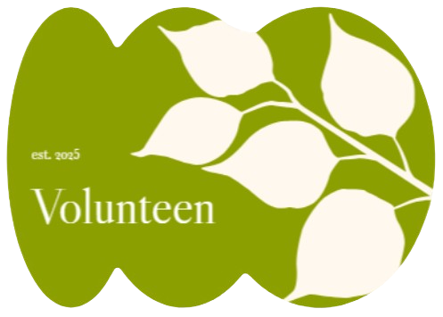

Join Volunteen and make a lasting impact on your community.

Our Features
🤖 Chat Bot
Get immediate help and answers from our AI-powered chatbot.
🔢 Impact Calculator
Measure your volunteering impact and see the difference you make.
🤝 Volunteer
Discover local volunteer opportunities and join community events.
📢 Organize
Create and manage your own volunteering events.
🌐 Community
Share your experiences and interact with fellow volunteers.
💰 Fundraising
Create and manage fundraising campaigns to support your cause.
🏆 Leaderboard
See top volunteers and compete for community recognition.
🔥 Challenges
Engage with monthly volunteering challenges and earn rewards.
✨ For You
Personalized event recommendations curated just for you.
Volunword
Guess today’s volunteering word (5 letters)!
Volunteer Impact Trivia Quiz
🔥0 Correct in a Row
Why Volunteer?
1. Benefits of Volunteering
Skill Development: Gain experience in leadership, teamwork, communication, and problem-solving.
Networking: Build valuable connections with professionals and other volunteers.
Personal Fulfillment: Make a meaningful impact in your community and feel a sense of accomplishment.
Resume & College Applications: Strengthen your applications by showcasing commitment to service.
Mental & Physical Well-being: Studies show that helping others can reduce stress and improve happiness.
2. Personal Growth
Volunteering helps you step out of your comfort zone and develop new perspectives. Whether it's leading a team, working with diverse groups, or managing an event, you’ll build confidence and valuable experience.
3. Career Boost
Many employers and colleges value volunteer experience. It demonstrates initiative, responsibility, and a willingness to contribute beyond yourself. Some industries, such as healthcare and social work, even require volunteer experience for entry-level positions.
Types of Volunteering
Community Service:
Food banks
Homeless shelters
Community clean-up projects
Soup kitchens
Education & Mentoring:
Tutoring students in various subjects
Reading programs at libraries or schools
Mentorship programs for younger students
Environmental Volunteering:
Tree planting initiatives
Recycling awareness campaigns
Beach or park clean-ups
Animal Welfare:
Volunteering at animal shelters
Assisting in rescue operations
Fostering pets
Healthcare Volunteering:
Assisting at hospitals or clinics
Mental health awareness programs
Senior citizen companionship programs
Event-Based Volunteering:
Charity runs and walks
Nonprofit fundraising events
Festival and community events
How to Get Started
Finding the Right Opportunity:
Use online platforms like Volunteen and local nonprofit websites. Consider your skills, availability, and passion before committing. Attend volunteering fairs or community events to explore opportunities.
Understanding Time Commitment:
Short-term: One-time events, seasonal projects.
Long-term: Weekly or monthly commitments, leadership roles.
Volunteering Etiquette:
Be punctual and reliable, communicate proactively with organizers, follow guidelines, respect fellow volunteers, and take initiative.
Age & Eligibility Requirements:
Some organizations have age restrictions (e.g., hospitals may require volunteers to be 16+). Remote opportunities may have fewer restrictions. Check for parental consent requirements if under 18.
Volunteering to help others can be wonderful way of giving and loving others
Chat with our Bot
Community Board
Share your volunteering experiences and interact with others.
×
Confirm Deletion
Are you sure you want to delete this post? This action cannot be undone.